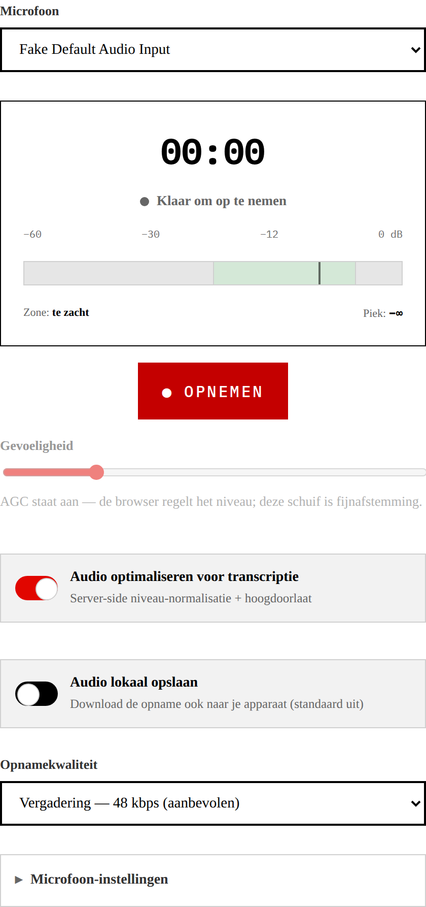
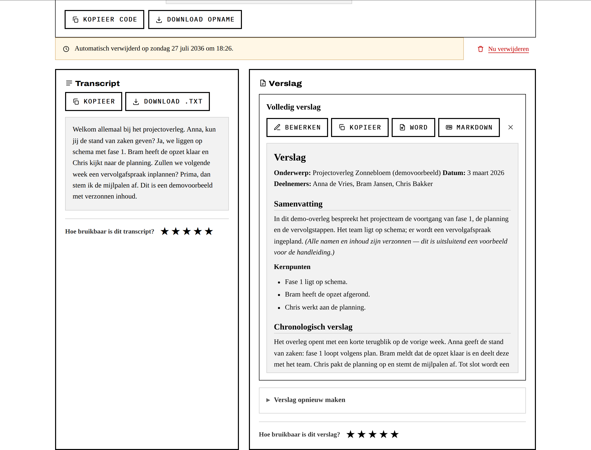

Anoniem transcriberen
Spraak naar tekst — zonder account of login. Deze handleiding legt in een paar stappen uit hoe je een opname laat transcriberen en er een verslag van maakt.
1 Aan de slag
Open de site in je browser. Je hoeft niet in te loggen en geeft geen persoonsgegevens op. Er zijn twee manieren om te beginnen: een bestand uploaden of direct opnemen.

2 Bestand uploaden
- Klik op Choose File en kies een audiobestand (wav, mp3, m4a, ogg, webm of flac).
- Laat Audio optimaliseren voor transcriptie aan staan (aanbevolen — zie §4).
- Klik op Uploaden & transcriberen.

3 Direct opnemen
Neem rechtstreeks in de browser op. Klik eerst op Microfoon inschakelen en geef toestemming voor de microfoon.

Opnemen, pauzeren en stoppen
- ● Opnemen start de opname. Je ziet de timer lopen en de niveaumeter bewegen — houd die in het groen voor de beste kwaliteit.
- ⏸ Pauzeren pauzeert tijdelijk; klik nogmaals om te hervatten.
- ■ Stop & verstuur stopt de opname en stuurt hem ter transcriptie.
- 🗑 Stop & weggooien stopt en verwijdert de opname direct — er wordt niets verstuurd.


Opnamekwaliteit
Kies bij Opnamekwaliteit de bitrate. Vergadering — 48 kbps (standaard) is de aanbevolen keuze: goede kwaliteit voor meerdere sprekers in een ruimte, en toch compacte bestanden. Voor één spreker dichtbij volstaat Spraak — 32 kbps; voor lastige akoestiek kun je Hoog — 64 kbps nemen.
4 Audio optimaliseren voor transcriptie
Deze optie (standaard aan) verbetert de audio server-side vóór transcriptie met een lichte hoogdoorlaat (weg met bromtonen) en niveau-normalisatie (consistent volume). Dit maakt de herkenning robuuster zonder de stem te beschadigen. Laat 'm gewoon aan staan, tenzij je precies weet dat je het niet wilt.
5 Wachten op het resultaat
Na het versturen zie je een statuspagina. Zodra het transcript klaar is, verschijnt het automatisch op dezelfde pagina — je hoeft niet te verversen of te klikken. Je kunt ook de sessie-code kopiëren en later terugkomen (zie §7). Bovenaan staat je code (met een knop om de audio te downloaden); daaronder de status en straks het transcript.

6 Verslag maken & exporteren
Naast het transcript kun je een verslag laten uitwerken door de taalmodel-assistent:
- Klik op ✨ Volledig verslag voor een compleet verslag (samenvatting, onderwerpen, besluiten, afspraken, actiepunten, aandachtspunten), of
- kies losse secties via de chips en klik op Genereer gekozen secties, of
- gebruik Eigen prompt voor een vrije instructie. Optioneel geef je Context mee (onderwerp, datum, deelnemers).
Elk verslag kun je kopiëren of downloaden als Word (.docx) of .md:

7 Sessie-code & later ophalen
Elke opname krijgt een unieke, geheime sessie-code. Bewaar die goed: het is de enige sleutel tot jouw resultaat. Naast de code kun je met ⬇ Audio altijd het originele geluidsbestand downloaden. Wil je later terugkomen, ga dan naar Ophalen via code, plak de code en klik op Ophalen.


8 Privacy & bewaartermijn
- Anoniem: geen account, geen login, geen persoonsgegevens, geen tracking.
- Automatisch verwijderen: audio, transcript en verslag worden verwijderd 2 werkdagen na de verwerking (weekenden tellen niet mee).
- Zelf verwijderen: met Stop & weggooien gooi je een opname meteen weg.
- De sessie-code is een geheim — deel hem alleen met wie het transcript mag zien.